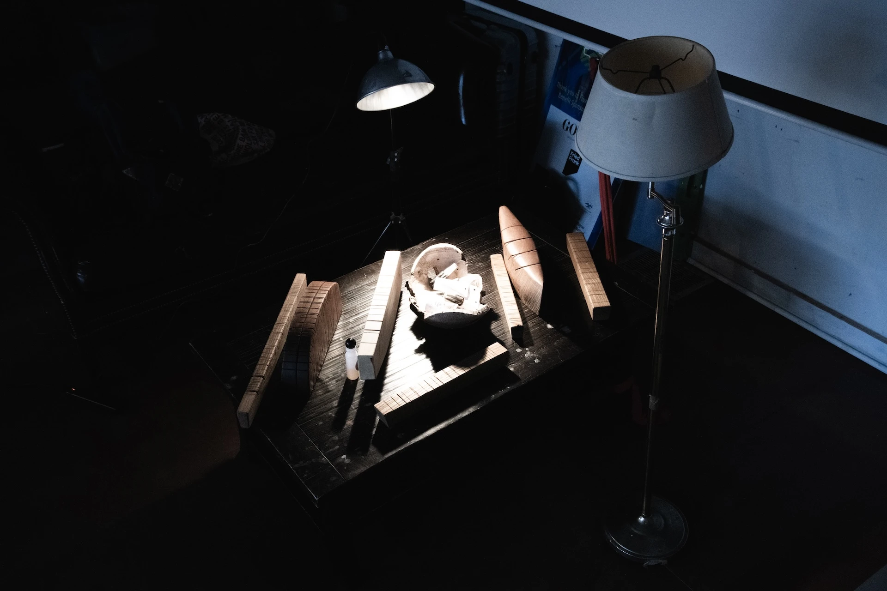

This Workshop took place on November 3rd, 2024 @ Flux Factory, hosted by Daniel Fishkin
The Arbrasson was invented in 1996 by José Le Piez , a magician and sculptor based in Bordeaux, France. By carving notches into polished logs, he crafts wild polyphonic sculptures that resonate when rubbed. Le Piez discovered the concept accidentally while building furniture. Over time, he learned to control it, and developed an entire sculptural vocabulary for the instrument.

incoming Daniel Fishkin Guide DIY